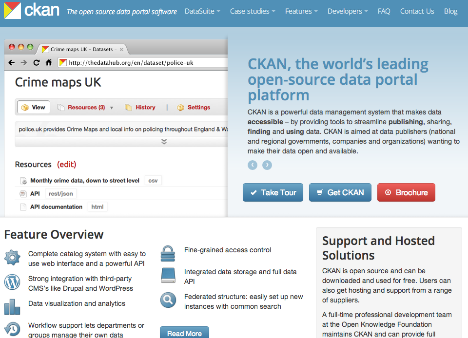

As we saw in the previous section, data catalogs are platforms that provide access to a wide range of datasets from different domains. Below we describe CKAN that can be used to build data catalogs and The Data Hub, which is a public catalog of datasets.
CKAN [20] is an open source platform for developing a catalog for a number of datasets. CKAN may be used by an organisation for internally managing their datasets. These datasets need not be publically available as part of the Linking Open Data cloud. CKAN features a number of tools for data publishers to support:

Figure 16. CKAN.
CKAN has a schema for describing contributed datasets. This is similar to the VoID schema described in section 3.5.1.
Figure 17: Overview of the CKAN portal (from [20]).
The Data Hub [21] is a community-run data catalog that contains more than 5,000 datasets. Data Hub is implemented using the CKAN platform and can be used to find public datasets. In The Data Hub, datasets can be organised into groups each having their own user permissions. Groups may be topic based (e.g. archaeological datasets) or datasets in a particular language or originating from a certain country.
Figure 18: The Data Hub.
The group “Linking Open Data Cloud” catalogs datasets that are available on the Web as Linked Data.
Figure 19: The group Linking Open Data Cloud on The Data Hub.
Every bubble in the Linking Open Data cloud (shown in Figure 3.20) is registered with the Data Hub. For a dataset to be included in this cloud it must satisfy the following criteria:
Once these criteria are met, the data publisher must add the dataset to the Data Hub catalog, and contact the administrators of the Linking Open Data Cloud group.
Figure 20: Linking Open Data Cloud.